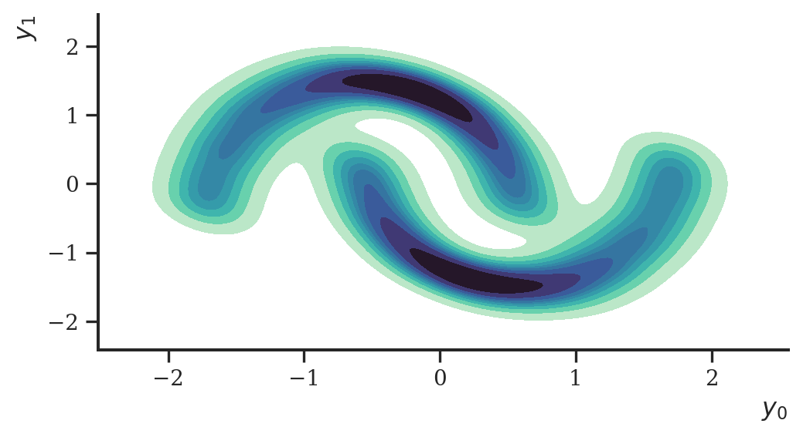
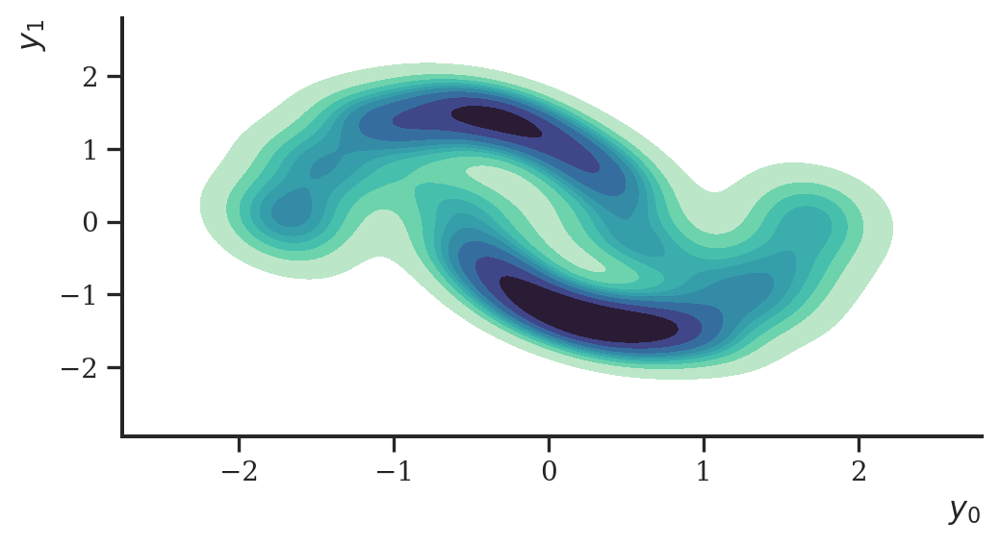
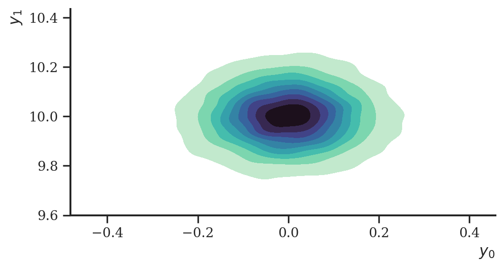
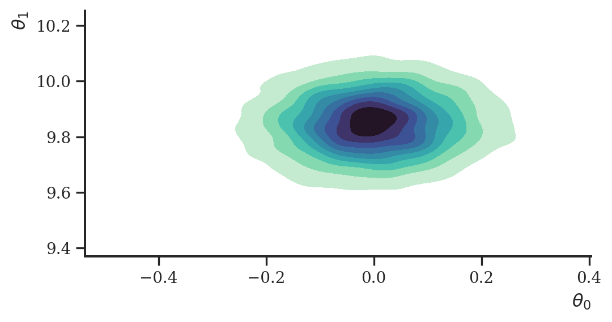

import numpy as np
import pandas as pd
import jax
from jax import numpy as jnp, lax, nn, random
import optax
import haiku as hk
import distrax
import matplotlib.pyplot as plt
import seaborn as sns
import arviz as az
import palettes
from sklearn import datasets
from sklearn.preprocessing import StandardScaler
sns.set(rc={"figure.figsize": (6, 3)})
sns.set_style("ticks", {'font.family': 'serif', 'font.serif': 'Merriweather'})
palettes.set_theme()Normalizing flows for variational inference
Normalizing flows have recently received plenty of attention for density estimation (DE) and variational inference (VI). Following up on the case study on DE, here we implement some flows for VI using Jax, Haiku, Optax and Distrax. The mathematical background can be found in the case study on DE, so here we will first translate our old TF code to Jax, test it on some simple DE task, and then adopt the flow for VI using inverse autoregressive flows (Kingma et al. 2016).
IAFs
We will make use the inverse autoregressive flow (IAF, Kingma et al. (2016)) for building rich families of distributions. Briefly, the IAF constructs a push-forward from a base distribution \(q_0\) to a target distribution \(q_1\) via the transformation \(f\) as
\[\begin{align} y_i &= f\left(x_i\right)\\ y_i &= x_i \exp \left( \alpha_i \right) + \mu_i \\\\ \end{align}\]
where \(\mathbf{x} \sim q_0\) and \(\mathbf{y} \sim q_1\). The density of a data point can then be evaluated via
\[\begin{align} q_1(\mathbf{y}) & = q_0\left(f^{-1}(\mathbf{y})\right) \begin{vmatrix} \text{det} \frac{\partial f^{-1}}{\partial \mathbf{y}} \end{vmatrix} \end{align}\]
or alternatively as
\[\begin{align} q_1(\mathbf{y}) & = q_0\left(\mathbf{x}\right) \begin{vmatrix} \text{det} \frac{\partial f}{\partial \mathbf{x}} \end{vmatrix}^{-1} \end{align}\]
by envoking the inverse function theorem and properties of the Jacobian of invertible functions.
The IAF makes use of masked autoencoding (Germain et al. 2015) to achieve an autoregressive factorization of \(q_1\). Since Haiku does at the time of writing this not have a masked layer which we need for a masked autoencoder, we can easily implement one ourselves:
class MaskedDense(hk.Module):
def __init__(self, mask):
super().__init__()
self.mask = mask
self.dtype = jnp.float32
def __call__(self, inputs):
w = hk.get_parameter(
'w',
jnp.shape(self.mask),
self.dtype,
hk.initializers.TruncatedNormal(.1)
)
b = hk.get_parameter('bias', (jnp.shape(self.mask)[-1],), self.dtype, jnp.zeros)
outputs = jnp.dot(inputs, jnp.multiply(w, self.mask), precision=None)
outputs += b
return nn.leaky_relu(outputs)We then adopt the code from the NFs for DE case study to create an autoencoder with masked weights:
def make_degrees(p, hidden_dims):
m = [jnp.arange(1, p + 1)]
for dim in hidden_dims:
n_min = jnp.minimum(jnp.min(m[-1]), p - 1)
degrees = jnp.maximum(
n_min,
(jnp.arange(dim) % max(1, p - 1) + min(1, p - 1))
)
m.append(degrees)
return m
def make_masks(degrees):
masks = [None] * len(degrees)
for i, (ind, outd) in enumerate(zip(degrees[:-1], degrees[1:])):
masks[i] = (ind[:, jnp.newaxis] <= outd).astype(jnp.float32)
masks[-1] = (degrees[-1][:, jnp.newaxis] < degrees[0]).astype(jnp.float32)
return masks
def make_network(p, hidden_dims, params):
masks = make_masks(make_degrees(p, hidden_dims))
masks[-1] = jnp.tile(masks[-1][..., jnp.newaxis], [1, 1, params])
masks[-1] = jnp.reshape(masks[-1], [masks[-1].shape[0], p * params])
layers = []
for mask in masks:
layer = MaskedDense(mask)
layers.append(layer)
layers.append(hk.Reshape((p, params)))
return hk.Sequential(layers)
def unstack(x, axis=0):
return [lax.index_in_dim(x, i, axis, keepdims=False) for i in range(x.shape[axis])]Above we also created a utility function unstack that takes the output of a neural network and splits it in two at some axis.
To construct a bijector using Distrax, we create a class that inherits from Distrax’s Bijector class. For our purposes, the class needs to define a forward and inverse (i.e., backward) transformation with their respective log Jacobian determinants. Since, as we saw above, the log Jacobian determinant of the forward transformation is the negative of the inverse transformation, we just need to implement one of the two.
class IAF(distrax.Bijector):
def __init__(self, net, event_ndims_in: int):
super().__init__(event_ndims_in)
self.net = net
def forward_and_log_det(self, x):
shift, log_scale = unstack(self.net(x), axis=-1)
y = x * jnp.exp(log_scale) + shift
logdet = self._forward_log_det(log_scale)
return y, logdet
def _forward_log_det(self, forward_log_scale):
return jnp.sum(forward_log_scale, axis=-1)
def inverse_and_log_det(self, y):
x = jnp.zeros_like(y)
for _ in jnp.arange(x.shape[-1]):
shift, log_scale = unstack(self.net(x), axis=-1)
x = (y - shift) * jnp.exp(-log_scale)
logdet = -self._forward_log_det(log_scale)
return x, logdetIn addition, to make our flow more flexible, we add a permutation bijector. It will only flip around the order of elements of a random vector. Its log Jacobian determinant is zero which makes it volume-preserving.
class Permutation(distrax.Bijector):
def __init__(self, permutation, event_ndims_in: int):
super().__init__(event_ndims_in)
self.permutation = permutation
def forward_and_log_det(self, x):
return x[..., self.permutation], jnp.full(jnp.shape(x)[:-1], 0.0)
def inverse_and_log_det(self, x):
size = self.permutation.size
permutation_inv = (
jnp.zeros(size, dtype=jnp.result_type(int))
.at[self.permutation]
.set(jnp.arange(size))
)
return x[..., permutation_inv], jnp.full(jnp.shape(x)[:-1], 0.0)Finally, we are interested in using multiple flows to make our target distribution even more flexible. We can do so by using multiple transformations \(f_i\) one after another where \(i \in 1, dots, K\) and \(K\) is the total number of flows
\[\begin{align} \mathbf{y} = \mathbf{x}_K = f_K \circ f_{K - 1} \circ \ldots \circ f_1(\mathbf{x}_0) \end{align}\]
In that case, to evaluate the density of a data point, we merely need to keep track of the Jacobian determinants of every transformation and compute the density as:
\[\begin{align} q_K(\mathbf{y}) = q_0\left(\mathbf{x}_0 \right) \prod_{k=1}^K \left| \text{det} \frac{\partial f_k}{\partial \mathbf{x}_{k - 1}} \right|^{-1} \end{align}\]
Programmatically, we construct a class called Chain that iteratively applies the flows \(f_i\) to a sample of the base distribution, while keeping track of the Jacobian determinants. We swap between using IAF flows and permutation flows:
class Chain(distrax.Bijector):
def __init__(self, n, hidden_dims):
self.n = n
order = jnp.arange(2)
self.flows = []
for i in range(n):
self.flows.append(IAF(make_network(2, hidden_dims, 2), 2))
self.flows.append(Permutation(order, 2))
order = order[::-1]
self.flows = self.flows[:-1]
def __call__(self, x, method):
return getattr(self, method)(x)
def forward_and_log_det(self, x):
logdets = 0.0
y = x
for flow in self.flows:
y, logdet = flow.forward_and_log_det(y)
logdets += logdet
return y, logdets
def inverse_and_log_det(self, y):
logdets = 0.0
x = y
for flow in self.flows[::-1]:
x, logdet = flow.inverse_and_log_det(x)
logdets += logdet
return x, logdetsIn the end, we wrap the code above in a distribution class with which we can sample and compute the log-probability of a point.
class Distribution:
def __init__(self, flow):
self.flow = flow
self.base = distrax.Independent(
distrax.Normal(jnp.zeros(2), jnp.ones(2)),
1
)
def sample(self, rng, params, sample_shape=(1,)):
x, log_prob = self.base.sample_and_log_prob(
seed=rng, sample_shape=sample_shape
)
y, _ = self.flow.apply(params, x, "forward_and_log_det")
return y
def sample_and_log_prob(self, rng, params, sample_shape=(1,)):
x, log_prob = self.base.sample_and_log_prob(
seed=rng, sample_shape=sample_shape
)
y, logdet = self.flow.apply(params, x, "forward_and_log_det")
return y, log_prob - logdet
def log_prob(self, params, y):
x, logdet = self.flow.apply(params, y, "inverse_and_log_det")
logprob = self.base.log_prob(x)
return logprob + logdetDensity estimation
We repeat the exercise from the previous case study to check if everything is implemented correctly: we draw a sample of size 10000 from the two moons data set and try to estimate its density.
n = 10000
y, _ = datasets.make_moons(n_samples=n, noise=.05, random_state=1)
y = StandardScaler().fit_transform(y)
y = jnp.asarray(y)
df = pd.DataFrame(np.asarray(y), columns=["x", "y"])
ax = sns.kdeplot(
data=df, x="x", y="y", fill=True, cmap="mako_r"
)
ax.set_xlabel("$y_0$")
ax.set_ylabel("$y_1$")
plt.show()
To use the flow as a density estimator, we first set up the flow and initialize it, and use it within a distribution object as a push-forward.
def _flow(x, method):
return Chain(10, [128, 128])(x, method)
flow = hk.without_apply_rng(hk.transform(_flow))
params = flow.init(random.PRNGKey(2), y, method="inverse_and_log_det")
distribution = Distribution(flow)We then optimize the negative log-probability of the distribution given the data. We’ll use Optax for that.
adam = optax.adamw(0.001)
opt_state = adam.init(params)
@jax.jit
def step(params, opt_state, y):
def loss_fn(params, y):
log_prob = distribution.log_prob(params, y)
loss = -jnp.sum(log_prob)
return loss
loss, grads = jax.value_and_grad(loss_fn)(params, y)
updates, new_opt_state = adam.update(grads, opt_state, params)
new_params = optax.apply_updates(params, updates)
return loss, new_params, new_opt_state
prng_seq = hk.PRNGSequence(42)
for i in range(20000):
loss, params, opt_state = step(params, opt_state, y) Having learned the parameters of the flow, we can use it to sample from distribution we tried to estimate.
samples = distribution.sample(random.PRNGKey(2), params, sample_shape=(1000,))
samples = pd.DataFrame(np.asarray(samples), columns=["x", "y"])
ax = sns.kdeplot(
data=samples, x="x", y="y", fill=True, cmap="mako_r"
)
ax.set_xlabel("$y_0$")
ax.set_ylabel("$y_1$")
plt.show()
This worked nicely. Let’s now turn to variational inference.
Variational inference
Having established a functioning flow architecture above, we now can use it for variational inference. Let’s create a simple data set of which we try to estimate the means \(\boldsymbol \theta\) of the distribution \(p(\mathbf{y} \mid \boldsymbol \theta)\). The model is fairly simple: a linear means model of a bivariate Normal distribution.
y = distrax.Normal(
jnp.array([0.0, 10.0]), 0.1
).sample(seed=random.PRNGKey(2), sample_shape=(10000,))
ax = sns.kdeplot(
data= pd.DataFrame(np.asarray(y), columns=["x", "y"]),
x="x", y="y",
fill=True, cmap="mako_r"
)
ax.set_xlabel("$y_0$")
ax.set_ylabel("$y_1$")
plt.show()
Again, we initialize a flow first, and use it as a member of a distribution object:
def _flow(x, method):
return Chain(2, [128, 128])(x, method)
flow = hk.without_apply_rng(hk.transform(_flow))
params = flow.init(random.PRNGKey(1), y, method="inverse_and_log_det")
distribution = Distribution(flow)The loss function in this case is the negative evidence lower bound (ELBO)
\[\begin{align} \text{ELBO}(q) & = \mathbb{E}_q \left[\log p (\mathbf{y}, \boldsymbol \theta) - \log q(\boldsymbol \theta) \right] \\ & = \mathbb{E}_{q_{K}} \left[\log p (\mathbf{y}, \boldsymbol \theta_K) - \log q_K(\boldsymbol \theta_K) \right] \\ & = \mathbb{E}_{q_0} \left[ \log p (\mathbf{y}, \boldsymbol \theta_K) - \log \left[ q_0(\boldsymbol \theta_0) \prod_{i=1}^K \begin{vmatrix} \det \dfrac{df_i}{d \boldsymbol \theta_{i - 1}} \end{vmatrix}^{-1} \right] \right] \end{align}\]
where \(\boldsymbol \theta_0 \sim q_0\) is the base distribution to which the flow is applied and \(\boldsymbol \theta_K \sim q_K\) is the target distribution. An optimizer of the negative ELBO can be implemented like this:
optimizer = optax.adam(0.001)
opt_state = optimizer.init(params)
@jax.jit
def step(params, opt_state, y, rng):
prior = distrax.Independent(
distrax.Normal(jnp.zeros(2), jnp.ones(2)),
1
)
def loss_fn(params):
def _vmap_logprob(i):
z, z_log_prob = distribution.sample_and_log_prob(
rng, params, sample_shape=(1,)
)
logprob_pxz = distrax.Independent(distrax.Normal(z, 1.0), 1).log_prob(y)
logprob_pz = prior.log_prob(z)
elbo = jnp.sum(logprob_pxz) + logprob_pz - z_log_prob
return -elbo
losses = jax.vmap(_vmap_logprob, 0)(jnp.arange(10))
loss = jnp.mean(losses)
return loss
loss, grads = jax.value_and_grad(loss_fn)(params)
updates, new_opt_state = optimizer.update(grads, opt_state, params)
new_params = optax.apply_updates(params, updates)
return loss, new_params, new_opt_stateWe will use batches of size 128 in this case, not because it is necessary, but rather, because we conventionally use stochastic variational inference to scale to larger data sets if warranted for.
prng_seq = hk.PRNGSequence(1)
batch_size = 128
num_batches = y.shape[0] // batch_size
idxs = jnp.arange(y.shape[0])
for i in range(2000):
losses = 0.0
for j in range(batch_size):
ret_idx = lax.dynamic_slice_in_dim(idxs, j * batch_size, batch_size)
batch = lax.index_take(y, (ret_idx,), axes=(0,))
loss, params, opt_state = step(params, opt_state, batch, next(prng_seq))
losses += loss Let’s visualize a sample of the approximate posterior.
base = distrax.Independent(distrax.Normal(jnp.zeros(2), jnp.ones(2)), 1)
base_samples = base.sample(seed=random.PRNGKey(33), sample_shape=(5000,))
samples, _ = flow.apply(params, base_samples, method="forward_and_log_det")
samples = np.asarray(samples)
ax = sns.kdeplot(
x=samples[:, 0], y=samples[:, 1], fill=True, cmap="mako_r"
)
ax.set_xlabel("$\\theta_0$")
ax.set_ylabel("$\\theta_1$")
plt.show()
This worked greatly again, albeit on an obviously very simple example.
License

The notebook is licensed under a Creative Commons Attribution-NonCommercial 4.0 International License.
Session info
import session_info
session_info.show()Click to view session information
----- arviz 0.12.0 distrax 0.1.2 haiku 0.0.6 jax 0.3.14 jaxlib 0.3.7 matplotlib 3.4.3 numpy 1.20.3 optax 0.1.2 palettes NA pandas 1.3.4 seaborn 0.11.2 session_info 1.0.0 sklearn 1.1.1 -----
Click to view modules imported as dependencies
PIL 9.0.1 absl NA appnope 0.1.3 asttokens NA backcall 0.2.0 beta_ufunc NA binom_ufunc NA bottleneck 1.3.4 cffi 1.15.0 cftime 1.5.1.1 chex 0.1.3 colorama 0.4.5 cycler 0.10.0 cython_runtime NA dateutil 2.8.2 debugpy 1.6.0 decorator 5.1.1 defusedxml 0.7.1 entrypoints 0.4 etils 0.6.0 executing 0.8.3 flatbuffers 2.0 importlib_metadata NA ipykernel 6.13.0 ipython_genutils 0.2.0 ipywidgets 7.7.0 jedi 0.18.1 jmp 0.0.2 joblib 1.1.0 jupyter_server 1.16.0 kiwisolver 1.4.2 matplotlib_inline NA mpl_toolkits NA nbinom_ufunc NA netCDF4 1.5.7 numexpr 2.8.1 opt_einsum v3.3.0 packaging 21.3 parso 0.8.3 pexpect 4.8.0 pickleshare 0.7.5 pkg_resources NA prompt_toolkit 3.0.29 psutil 5.9.0 ptyprocess 0.7.0 pure_eval 0.2.2 pydev_ipython NA pydevconsole NA pydevd 2.8.0 pydevd_file_utils NA pydevd_plugins NA pydevd_tracing NA pygments 2.11.2 pyparsing 3.0.8 pytz 2022.1 scipy 1.7.3 setuptools 61.2.0 six 1.16.0 stack_data 0.2.0 tabulate 0.8.10 tensorflow_probability 0.17.0-dev20220713 threadpoolctl 3.1.0 toolz 0.11.2 tornado 6.1 traitlets 5.1.1 tree 0.1.7 typing_extensions NA wcwidth 0.2.5 xarray 2022.3.0 zipp NA zmq 22.3.0
----- IPython 8.2.0 jupyter_client 7.2.2 jupyter_core 4.10.0 jupyterlab 3.3.4 notebook 6.4.11 ----- Python 3.9.12 (main, Apr 5 2022, 01:52:34) [Clang 12.0.0 ] macOS-12.2.1-arm64-i386-64bit ----- Session information updated at 2022-08-10 20:03
References
Germain, Mathieu, Karol Gregor, Iain Murray, and Hugo Larochelle. 2015. “MADE: Masked Autoencoder for Distribution Estimation.” In Proceedings of the 32nd International Conference on Machine Learning, 37:881–89. Proceedings of Machine Learning Research. PMLR.
Kingma, Durk P, Tim Salimans, Rafal Jozefowicz, Xi Chen, Ilya Sutskever, and Max Welling. 2016. “Improved Variational Inference with Inverse Autoregressive Flow” 29.